Klammern auflösen
Mit einem KI-Tutor lernen
Ein KI-Tutor erklärt dir diese Seite und hilft dir bei den Aufgaben. Wähl deinen Assistenten:
Mit Claude öffnen Mit ChatGPT öffnen Mit Mistral Vibe öffnen
Du nutzt dein eigenes Konto beim Anbieter. Der Assistent ist kein Angebot von lernapps.net: lernapps liefert nur Inhalte und Aufgaben. Die Wahl gilt für alle Seiten, nur auf diesem Gerät.
Ein Rechteck in Teile zerlegen
Wenn ein Term eine Klammer hat, kannst du ihn oft nicht weiter vereinfachen. Erst ohne Klammer geht es weiter. Wie das gelingt, zeigt ein Rechteck. Du kannst es in Teile zerlegen. Die Fläche jedes Teils ist Höhe mal Breite. Zusammen sind es die Fläche des ganzen Rechtecks.
Aufgabe
Lösung
6x + 18 richtige Antwort
Die Höhe 6 gilt für beide Teile: 6 · x + 6 · 3 = 6x + 18.
6x + 3
Die Höhe 6 gilt auch für den zweiten Teil: Er hat die Fläche 6 · 3 = 18.
x + 18
Der erste Teil hat die Fläche 6 · x, nicht x.
6 · (x + 3) = 6 · x + 6 · 3 = 6x + 18.
Plus oder Minus vor der Klammer
Wenn du einen Term mit Klammer vereinfachen willst, musst du erst die Klammer loswerden. Steht vor ihr nur ein Plus oder Minus, geht das so: Eine Klammer auflösen heißt: Du schreibst den Term ohne Klammer, sein Wert bleibt gleich. Bei einem Plus davor lässt du die Klammer weg. Bei einem Minus dreht sich jedes Vorzeichen in der Klammer um.
Aufgabe
Lösung
Richtige Antwort: 10
7 − 2 + 5 = 10.
Faktor vor der Klammer
Wenn du eine Klammer mit einer Zahl davor auflösen willst, hilft das Rechteckmodell: Es zeigt, dass die Zahl für jedes Glied in der Klammer gilt. Ein Rechteck mit der Höhe und der Breite besteht aus zwei Teilen: und .

© MITOben: Höhe 3, Breite (blauer Teil , oranger Teil ). Die Teilflächen sind und . Unten: Bei wird der gestrichelte Streifen der Breite abgezogen, es bleibt .
Das ist das Distributivgesetz (Verteilungsgesetz): Ein Faktor vor der Klammer wird mit jedem Glied in der Klammer multipliziert, das Vorzeichen gehört zum Glied: .
Beispiel
Kommen beide Fälle in einem Term vor, löst du die Klammern nacheinander auf und fasst danach zusammen.
Löse die Klammern auf und fasse zusammen: 4(x + 2) − (x − 3)
| Term | Begründung |
|---|---|
| Aufgabe | |
| 4 mal jedes Glied, das Minus dreht beide Vorzeichen | |
| ausgerechnet | |
| gleichartige Glieder nebeneinander | |
| zusammengefasst |
Probe mit Zahlen
Wenn du wissen willst, ob du die Klammern richtig aufgelöst hast, prüfst du mit der Wertetabelle: Links und rechts muss derselbe Wert herauskommen. So fallen typische Fehler auf.
| Umformung | Zahlen | Werte |
|---|---|---|
| 17 und 17 | ||
| , | −3 und −7 | |
| 18 und 10 |
Übung
Hier löst du Klammern selbst auf. Du brauchst das, um Terme ohne Klammer weiterzuvereinfachen.
Aufgabe
Lösung
10 − 2x richtige Antwort
7 − 2x + 3 = 10 − 2x.
4 − 2x
Du hast nur das erste Vorzeichen gedreht. Auch −3 wird +3.
4 + 2x
Du hast das Minus vor der Klammer ignoriert.
Minus vor der Klammer dreht jedes Vorzeichen.
Aufgabe Nr. 1
Aufgabe Nr. 1
Löse die Klammer auf und fasse zusammen: . Gib das Ergebnis als Term ein.
Lösung
- Klammern auflösen:
- Zusammenzählen:
- Ergebnis:
Aufgabe
Drei Beispielaufgaben, jede mit ihrer Lösung:
Aufgabe Nr. 1
Setze ein. Welchen Wert hat ?
Tipp
Rechne erst die Klammer aus: 4 + 5. Dann mal 7.
Lösung
Richtige Antwort: 63
Aufgabe Nr. 2
Setze ein. Welchen Wert hat ?
Tipp
Rechne erst die Klammer aus: 6 + 6. Dann mal 9.
Lösung
Richtige Antwort: 108
Aufgabe Nr. 3
Setze ein. Welchen Wert hat ?
Tipp
Rechne erst die Klammer aus: 6 + 2. Dann mal 9.
Lösung
Richtige Antwort: 72
Aufgabe Nr. 1
Aufgabe Nr. 1
Löse die Klammer auf: . Gib das Ergebnis als Term ein.
Lösung
- Faktor mit jedem Glied multiplizieren:
- Klammern auflösen:
Aufgabe
Drei Beispielaufgaben, jede mit ihrer Lösung:
Aufgabe Nr. 1
Löse die Klammer auf: . Welche Zahl steht hinter dem Minus?
Tipp
Das Glied −5 wird mit 4 multipliziert.
Lösung
Richtige Antwort: 20
Aufgabe Nr. 2
Löse die Klammer auf: . Welche Zahl steht hinter dem Minus?
Tipp
Das Glied −4 wird mit 8 multipliziert.
Lösung
Richtige Antwort: 32
Aufgabe Nr. 3
Löse die Klammer auf: . Welche Zahl steht hinter dem Minus?
Tipp
Das Glied −4 wird mit 2 multipliziert.
Lösung
Richtige Antwort: 8
Aufgabe
Lösung
Richtige Antwort: +(x − 3) – x − 3; −(x − 3) – −x + 3; 2(x − 3) – 2x − 6; −2(x − 3) – −2x + 6
Plus lässt alles stehen, Minus dreht jedes Vorzeichen, ein Faktor gilt für beide Glieder.
Aufgabe Nr. 1
Aufgabe Nr. 1
Löse die Klammern auf und fasse zusammen: . Gib das Ergebnis als Term ein.
Lösung
- Faktor mit jedem Glied multiplizieren:
- Klammern auflösen:
- Gleichartige Glieder nebeneinander:
- Zusammenzählen:
- Ergebnis:
Aufgabe
Lösung
Richtige Antwort: 1. −2(x − 5), 2. −2 · x − 2 · (−5), 3. −2x + 10
Erst jedes Glied mit −2 multiplizieren: −2 · (−5) = +10.
Das kannst du jetzt: Du löst Klammern mit Plus, Minus und einem Faktor davor auf, siehst die Aufgabe als Rechteck in Teilen und prüfst mit der Wertetabelle, ob der Term gleich geblieben ist.
Fehler gefunden oder eine Idee für diese App?